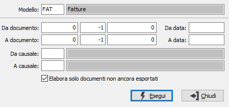

Esportazioni documenti
La procedura consente di esportare i documenti in base ai modelli di esportazione precedentemente inseriti.
Il programma richiede il modello da utilizzare ed una serie di parametri relativi alla selezione dei documenti, coerenti col modello utilizzato; è possibile specificare i limiti per riferimento (anno, serie, numero), per data documento, per causale; è possibile anche esportare più volte la stessa selezione lasciando vuota la casella "Elabora solo documenti non ancora esportati", se invece la casella è spuntata saranno esclusi dall'esportazione i documenti per cui questa operazione è già stata effettuata.
Al termine dell'esportazione, viene comunque aggiornata una tabella di log per tenere traccia delle esportazioni effettuate.
